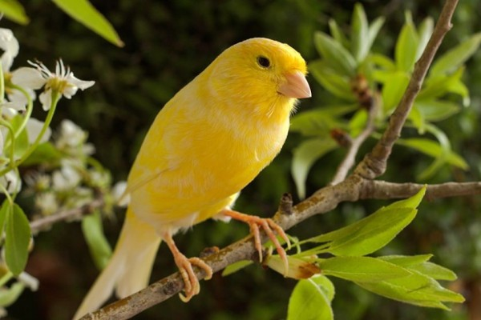

Welcome
Aplikasi ini bisa diakses tanpa harus login jika hanya ingin mengetahui tentang cara pemeliharaan hewan peliharaan anda.
Berikut Jenis Hewan Yang kami pilih :
Anjing (Dog)
Sebelum kamu berencana menambah peliharaan anjing dengan jenis yang berbeda, ketahui juga bagaimana perawatan sesuai dengan jenis anjing. Apa saja?
Baca selengkapnya di sini
..................................................................................................................................
Kucing Persia (Persia Cat)
Perlu diketahui kalau kucing Persia ini punya banyak jenis, lantas apakah cara merawatnya berbeda?
Baca selengkapnya di sini
..................................................................................................................................
Burung (Bird)

Kamu termasuk hobi memelihara burung kicau di rumah? Jika iya, seperti apa sih perawatan yang sudah dilakukan? Sudah yakin betul atau ada beberapa hal penting yang kamu lewatkan?
Baca selengkapnya di sini
..................................................................................................................................
Follow Us